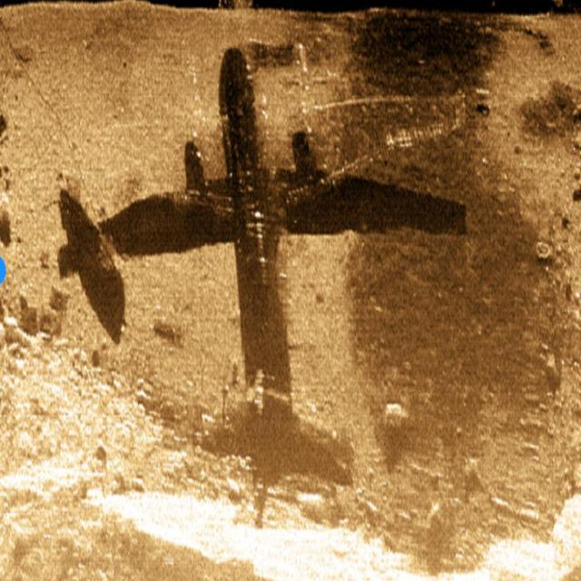

NEMO uses AI-assisted sonar analysis to identify potential underwater hazards and turn detections into structured, location-aware reports.
Marine debris, abandoned equipment, and other underwater hazards can be difficult to locate using conventional visual inspection alone. Side-scan sonar helps survey large areas, but the resulting imagery can contain ambiguous shapes, shadows, and seabed structures that closely resemble objects of interest.
Reliably distinguishing a submerged aircraft from a rocky outcrop, or a shipwreck from an irregular seabed mound, requires careful analysis that conventional manual review struggles to scale.

The current prototype implements a two-stage detection and verification pipeline, designed to reduce false positives while maintaining recall on known target categories.
NEMO ingests side-scan sonar imagery from supported recorded mission packages. Each image represents a grayscale acoustic-intensity capture from the sonar transducer, processed as a native single-channel input.
A YOLO11n model adapted for native one-channel sonar input proposes bounding-box candidates around regions of interest. The detector prioritizes recall, ensuring potential targets are not missed before the verification stage.
YOLO11n · 640×640 · 1-channel native inputA MobileNetV3-Small verifier independently evaluates each candidate crop as target-like or background. In prototype evaluation on the KLSG dataset, this reduced false positives from 19 to 16 while retaining recall.
MobileNetV3-Small · Binary verification · Target vs BackgroundWhen valid navigation metadata is present, detections are associated with mission coordinates. If coordinate mapping is absent or unreliable, the detection is marked as location-unavailable rather than assigned inferred data.
Detections are presented in the NEMO console with bounding coordinates, confidence scores, verifier decisions, and location status. Reports can be downloaded as CSV or JSON for further review and inspection planning.
NEMO aims to help survey operators review sonar imagery more efficiently, not by automating decisions, but by surfacing likely candidates for human review and organizing evidence into traceable, structured reports.
Each detection is presented with its source image, bounding coordinates, confidence score, verifier decision, and available location metadata. The analyst reviews; the system organizes.
NEMO is a prototype. Claims of autonomous cleanup, proven field deployment, real-time AUV integration, or guaranteed detection accuracy are out of scope for the current system version.
Sonar analysis is a skill. NEMO is a tool that aims to make that skill scale, by highlighting what matters and organizing what it finds.
The prototype was evaluated through controlled ablation experiments comparing input representations, detector scales, preprocessing choices, and two-stage pipeline configurations. These inform the current architecture selection.
| Metric | YOLO11n-1C only | Plus MobileNetV3 |
|---|---|---|
| Precision | 0.7031 | 0.7377 |
| Recall | 0.8654 | 0.8654 |
| F1 Score | 0.7759 | 0.7965 |
| False Positives | 19 | 16 |
| Latency | 15.6 ms per image | 27.2 ms per image |
| Throughput | ~64 FPS | ~37 FPS |
KLSG dataset · Aircraft + shipwreck target subset · NVIDIA Tesla T4 · Preliminary evaluation · v0.1.0-mdp
NEMO is a prototype exploring how AI-assisted sonar analysis can support underwater anomaly detection and structured reporting. The working console runs locally from the open-source repo.